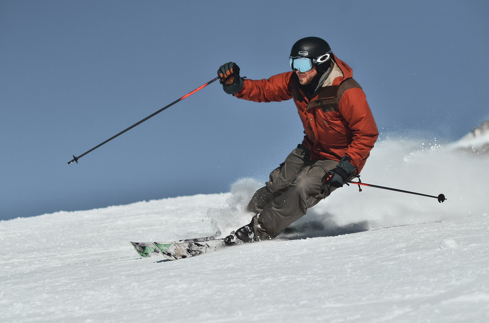
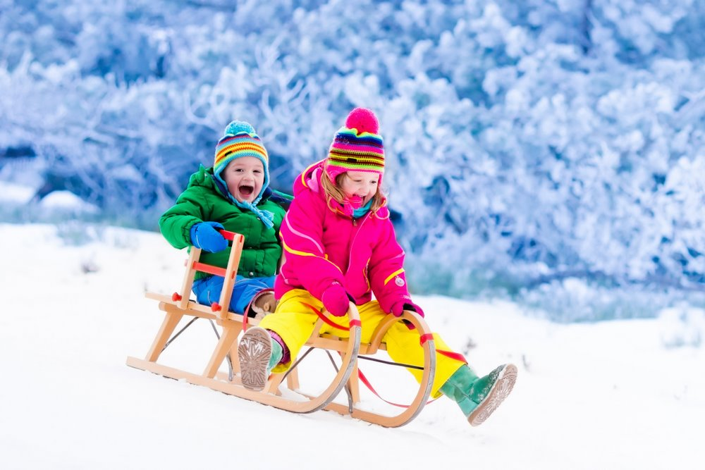
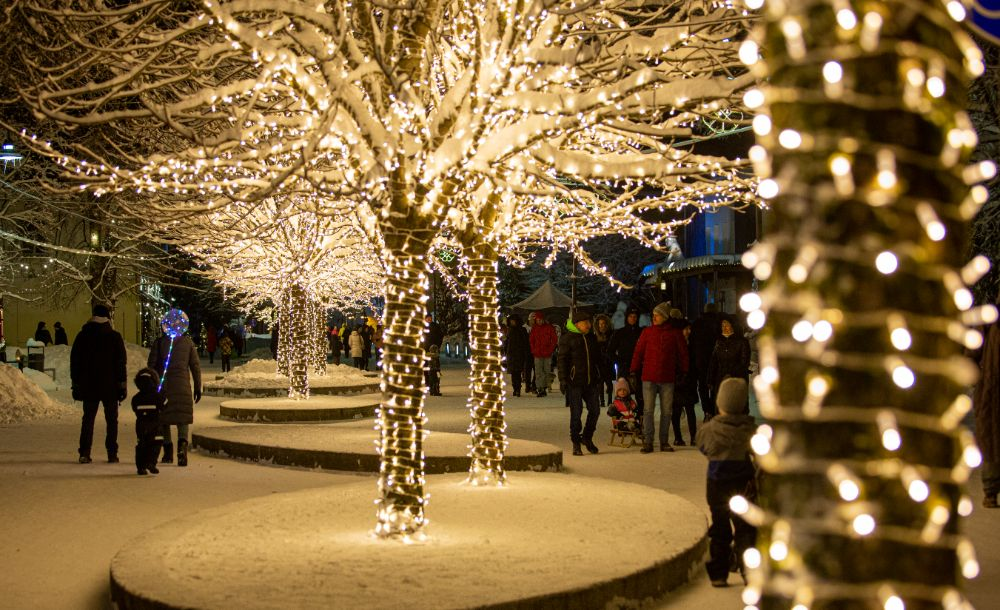
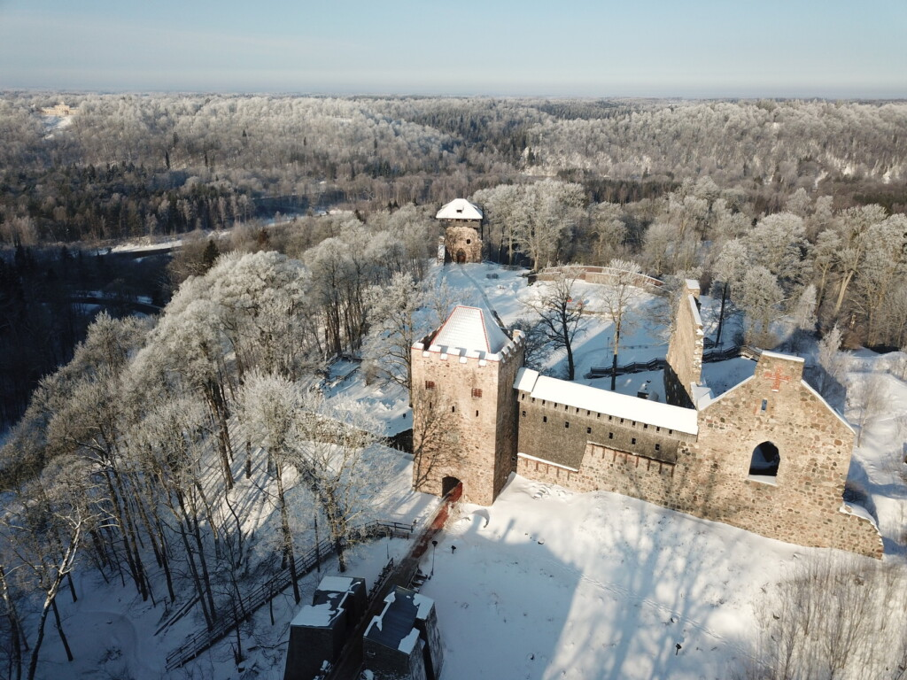

Viens no populārākajiem un lielākajiem slēpošanas kalniem Latvijā ir Riekstukalns.
Ar kamaniņām braukt var jebkurā sniegainā kalnā. Tikai jābūt uzmanīgam un nešļūkt pa kalnu, kas atrodas blakus ielai.
Ziemā tiek izrotātas un izgaismotas daudzas skaistas Latvijas vietas. Ir vērts apskatīt ar gaismām pilno Ogri.
 